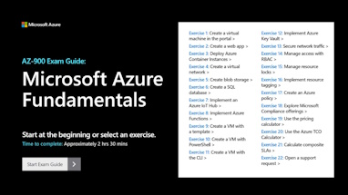

CERTIFICATION STUDY GUIDES
Client: Microsoft Azure
Project Overview
This set of 22 step-by-step guides provides exam prep for learners preparing to pass the Microsoft Azure Fundamentals certification exam. It is part of a larger family of Azure exam prep and lab simulation guides that I have helped develop either in the same role as described below for this individual project, or as a contributing writer and producer. This family of content has attracted more than a million visitors.
View the live demo hub: AZ-900 EXAM GUIDE - AZURE FUNDAMENTALS

Project Background
The Azure product team sought our help to build learning modules that would allow users to practice walking through key concepts covered in the Azure Fundamentals course quickly, without having to spin up their own live environment or spend time waiting for resources to be provisioned as they moved through the content.
Planning and Collaboration
I collaborated with our technical program manager and Azure subject matter experts to troubleshoot and capture a client-provided demo environment. I also worked with our content manager to determine the scripting style for the project.
My Key Individual Contributions to the Project
- Outlined demo flows for 22 guides based on client-provided GitHub documentation
- Performed informal QA on the client-provided demo environment, reporting minor issues (e.g. documentation out-of-sync with new UI elements, such as button names) and major blocking issues (e.g. critical missing files and permissions issues)
- End-to-end production
- Captured demo screenshot flows
- Wrote scripts for 22 guides based on client-provided GitHub documentation
- Managed audio vendor
- Produced interactive content (e.g. image editing and cleanup, audio pacing, adding interactive user prompts)